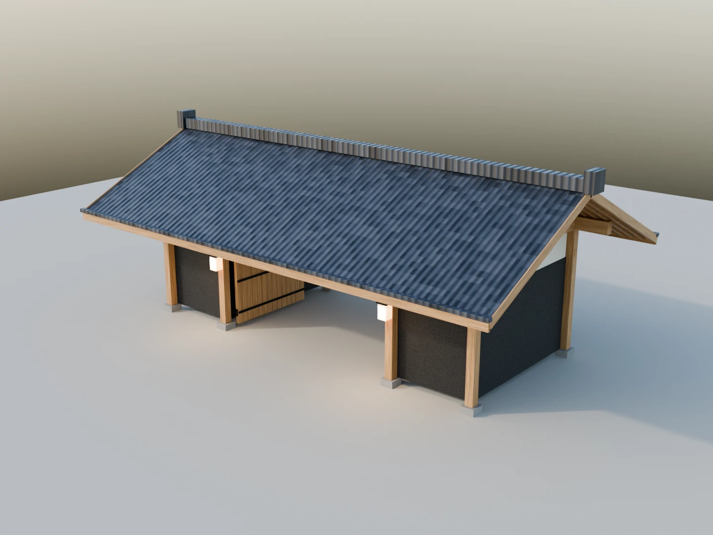

A native starting point
Editable Blender 4.5 LTS scenes, metric scale, named collections and procedural materials. Product geometry is separated from the included presentation setup.
Architecture to set a scene. Trees to give it life. Individual pieces from a world on the edge of the sea.
Explore the collection ↓
THE OBJECT LIBRARY
Choose a structure. Plant a grove.
Make the scene your own.
Collection preview. Prices are proposed launch prices in USD. Purchasing opens after release review.
FROM A PLACE TO A PIECE
The collection begins with Altair Estates: a coastal architectural world, planned and art-directed by Sumanth. Its forms are developed into independent objects with their own materials, controls and presentation scenes.
The product edition uses project-authored procedural geometry and materials. Its previews show the included objects, rendered directly in Blender. Downloaded vehicles, scanned props and portfolio-only artwork are excluded.
What comes with a piece ↗BEYOND THE PICTURE
Editable Blender 4.5 LTS scenes, metric scale, named collections and procedural materials. Product geometry is separated from the included presentation setup.
Opening gates, adjustable architectural light and tree sway where specified. Each package explains its controls and includes an example timeline.
Contents, geometry counts and limitations are listed per product. Unreal support, game performance and physical simulation are not claimed for these Blender editions.